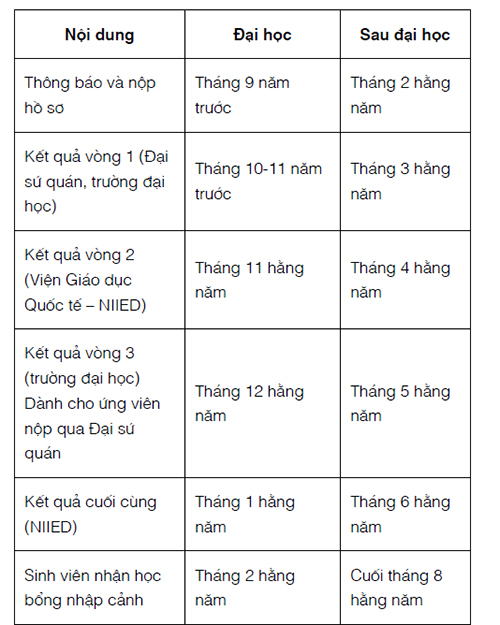

KẾ HOẠCH 1
Ai cũng có những việc mình ấp ủ,
ai cũng có ước mơ của riêng mình,
Nhưng đâu phải ai cũng thực hiện được điều đó.
Nếu bạn muốn biến ước mơ thành hiện thực,
thì hãy lên một kế hoạch thật hoàn hảo.
Kế hoạch là nấc thang thực hiện ước mơ,
giống như việc leo bậc thang,
từng bước từng bước vững chắc.
Và một ngày đẹp trời nọ,
đôi tay bạn với tới trời cao,
hái những vì sao mơ ước của chính mình.

Chỉ còn 24 tiếng nữa là tới ngày tận thế, bạn sẽ làm gì?
Hiện giờ ngày tận thế chỉ cách chúng ta 22 tiếng 55 phút 42 giây.
Không biết lúc này, bạn nhỏ Bong Hee đang làm gì nhỉ?
“Trời đất quỷ thần ơi!” Chú hói đầu bứt túm tóc ít ỏi trên đầu mình. “Sao có thể? Lẽ nào hôm nay chính là ngày tận thế?”
Một thím đứng bên đường vội lấy tay bưng miệng, một cô gái trẻ bồn chồn cắn móng tay, một cụ ông đưa đôi bàn tay nhăn nheo ôm lấy mặt và một anh thanh niên mặt đầy mụn đứng thất thần.
Lúc này, trên ti vi, phát ra giọng nói đĩnh đạc của người dẫn chương trình: “Mọi người thấy chưa? Một hành tinh đang lao nhanh về phía trái đất chúng ta! Theo các chuyên gia dự tính, thể tích của hành tinh này tương đương với thể tích trái đất!”
Hình ảnh một hành tinh dài, lồi lõm đang bay xuyên qua vũ trụ xuất hiện trên màn hình ti vi. Nó lao dọc theo quỹ đạo, kéo theo chiếc đuôi dài, trông giống một con nòng nọc đang bơi trong nước.
Khán giả ngồi chật kín khán đài. Người dẫn chương trình tiếp tục câu chuyện, giọng anh đầy lo lắng: “Nghe nói vận tốc của hành tinh đạt 38 nghìn km/giây. Nếu dựa vào tốc độ này, dự đoán nó sẽ lao vào trái đất lúc 8 giờ 23 phút, sáng ngày mùng 5 tháng 4, tức là 24 tiếng nữa kể từ thời khắc này. Hỡi người dân trên toàn thế giới, chỉ còn một ngày nữa thôi, hành tinh đó sẽ đâm vào trái đất thân yêu của chúng ta!”
“Khoảnh khắc va chạm, toàn bộ nhân loại sẽ bị diệt vong! Ngày tận thế sắp đến rồi, trái đất đang lâm vào cảnh hỗn loạn. Đây là buổi truyền hình trực tiếp cuối cùng trên trái đất, và bây giờ chúng ta hãy cùng tìm hiểu tình hình bên ngoài xem sao. Vâng, xin chào phóng viên Joo!”
Trên màn hình, xuất hiện hình ảnh một quảng trường rộng lớn.
“Tôi là phóng viên Joo đang có mặt tại hiện trường. Ở đây đang diễn ra một sự việc vô cùng ly kỳ.”
Trên quảng trường, đủ loại người với đủ mọi tâm trạng, người thì cầu nguyện, người thì ôm nhau, có người lại hát, có người diễn thuyết, còn có cả người chân trần đi bộ.
Chợt người ta nhìn thấy trong không trung, vô số những tờ tiền màu đỏ bay tứ tung, rơi đầy mặt đất.
“Tiền từ trên trời rơi xuống kìa! Nhiều tiền quá!”
Những tờ tiền màu đỏ chất đống như lá rụng mùa thu. Một cơn gió thổi chúng bay vương vãi khắp nơi, khiến đường phố trở nên bừa bộn.
“Phóng viên Joo, tiền ở đâu rơi xuống vậy?”
“Có lẽ từ trên nóc của tòa nhà kia. Nếu là trước đây, chắc chắn sẽ có rất nhiều người xông vào nhặt tiền, phố xá nhốn nháo và lộn xộn, nhưng bây giờ chẳng ai buồn cúi xuống nhặt cả.”
Người ta còn chau mày, bực bội khi phải giơ tay phủi bỏ những tờ tiền vương trên đầu mình.
Trên màn hình ti vi xuất hiện hình ảnh một ông lão hói đầu ngồi trên nóc tòa nhà cao tầng, đang ném từng nắm tiền ra không trung.
“Ôi! Chẳng phải là ngài chủ tịch hội đồng quản trị họ Wang, người nổi tiếng là giàu có nhưng vô cùng keo kiệt đó sao?”
Phóng viên Joo đưa micro về phía vị chủ tịch nọ, hỏi: “Xin hỏi, ngài đang làm gì vậy?”
Vị chủ tịch ki bo vừa lau mồ hôi, vừa thở phì phò, đáp: “Đó đều là những đồng tiền mồ hôi nước mắt mà tôi đã kiếm được trong suốt cả cuộc đời mình. Nhưng bây giờ chúng chẳng khác gì giấy vụn, không còn ý nghĩa nữa. Nếu ai có thể cho tôi thời gian một năm, không, cho dù chỉ một tháng thôi, tôi cũng sẵn sàng trả cho họ toàn bộ gia tài mà tôi có.”
Vị chủ tịch hội đồng quản trị ki bo ngồi trên nền xi măng, gào khóc như một đứa trẻ.
“Trên đời này, thứ không thể mua được bằng tiền chính là thời gian. Tôi đã thấm thía được tầm quan trọng của nó. Hu hu hu!” Nói rồi phóng viên Joo cũng ngồi phịch xuống đất và bắt đầu khóc.
Người dẫn chương trình thấy phóng viên Joo khóc thì cũng nghẹn ngào theo: “Các bạn khán giả, chưa tới thời khắc cuối cùng, chúng ta quyết không bỏ cuộc. Hy vọng mọi người sẽ không cam chịu lùi bước, hãy gắng hết sức mình để sống tới phút giây cuối cùng của cuộc đời. Và bây giờ tôi sẽ gọi một cuộc điện thoại.”

Reng, reng, reng!
Chuông điện thoại reo inh ỏi.
“A lô!” Giọng một bé gái vang lên.
“Đây là chương trình truyền hình trực tiếp cuối cùng trên trái đất của chúng ta. Chúng tôi là đài truyền hình NBS, hy vọng chương trình này sẽ mang lại cho quý vị một chút dũng khí và giấc mơ được tái sinh. Xin lỗi đã làm phiền, cháu hãy giới thiệu đôi chút về mình.”
“Cháu là... Ma Bong Hee... học sinh lớp lớp 5/3... trường tiểu học Naeng Cheon.” Cô bé ấp úng trả lời.
“Ồ! Đây là một bạn học sinh tiểu học. Bé Bong Hee thân mến, hiện giờ chỉ cách ngày tận thế 22 tiếng 55 phút 42 giây nữa thôi, thời gian quý báu đang dần trôi đi, vậy thì ngay lúc này, Bong Hee đang làm gì?”
Nghe người dẫn chương trình hỏi, cô bé thở dài.
Sau đó, cô bé im lặng một lúc rồi mới trả lời: “... Cháu đang ngủ.”
Người dẫn chương trình vô cùng ngạc nhiên: “Cháu nói gì cơ?”
“Cháu đang ngủ. Chính các chú đã đánh thức cháu dậy đấy.”
“Ồ, thì ra là thế. Các chú có thể hiểu điều này. Nhưng bây giờ là thời khắc vô cùng quan trọng. Bong Hee, cháu hãy mau thức dậy đi, hãy tranh thủ chút thời gian quý báu còn lại để làm điều cháu định làm. Cháu sẽ làm gì?”
Bong Hee lẩm bẩm: “Cháu sẽ làm gì nhỉ?”
“Chú muốn hỏi xem Bong Hee có kế hoạch đặc biệt nào không?”

“Chú nói kế hoạch ạ? Cháu không có đâu. Cháu luôn ghét những cái gọi là ‘kế hoạch’. Trước đây, cháu cũng đã lập một bản kế hoạch rồi, nhưng cháu chưa bao giờ theo nổi bản kế hoạch đó cả. Kế với chả hoạch, phiền phức lắm ạ.”
“Bong Hee này, nhưng ngày tận thế không còn bao lâu nữa đâu...”
“Chú ơi, cháu buồn ngủ lắm, cháu muốn đi ngủ.”
Nghe thế, người dẫn chương trình chỉ biết than trời.
“Thưa quý vị khán giả, có lẽ là bạn nhỏ Bong Hee vừa phải chịu đựng một sự kích động nào đó, mong quý vị thông cảm. Bong Hee thân mến, bây giờ không còn nhiều thời gian nữa. Thời gian chính là thứ quý giá nhất trên thế gian này, cháu không thể cứ ngủ mãi như thế!” Người dẫn chương trình tức giận hét lên, như thể anh sắp nhảy ra khỏi ti vi đến nơi rồi.
Bong Hee ngáp một cái: “Quý gì chứ ạ, cháu có rất nhiều thời gian.”
Bỗng nhiên, vị chủ tịch hội đồng quản trị ki bo nọ thò đầu về phía ống kính máy quay: “Này Bong Hee, mau dậy đi! Cháu có nhìn thấy những đồng tiền này không? Tiền không mua được thời gian đâu cháu ơi. Mau dậy đi!”
“Không đâu! Hôm qua cháu chơi điện tử tới mãi nửa đêm, bây giờ mệt lắm. Cháu rất đau đầu, cháu muốn đi ngủ! Biệt danh của cháu là ‘bình chân như vại’, cho dù có xảy ra chuyện gì cháu cũng sẽ không lo lắng, không sốt ruột. Mặc kệ hành tinh gì gì đó, mặc kệ ngày tận thế gì gì đó, chẳng liên quan gì đến cháu. Cháu chỉ muốn ngủ thôi.”
“Ôi trời!”
Dù là phóng viên Joo, ông già hói đầu, hay người dẫn chương trình tại trường quay, đều kinh ngạc đến mức không thốt nên lời nào.
Bong Hee lấy gối bịt chặt tai, lẩm bẩm: “... Ồ, mình hiểu rồi, đây chỉ là một giấc mơ.”

“Mơ ư?” Người dẫn chương trình lẫn vị chủ tịch ki bo và cả phóng viên Joo đều cùng lúc thốt lên.
“Từ hồi còn nhỏ, mình đã được mẹ kể cho nghe câu chuyện này rồi, chẳng có tác dụng gì cả. Năm phút, chỉ năm phút nữa thôi!” Bong Hee quấn chăn quanh người y như một cái kén.
Đột nhiên, giọng nói khàn khàn của bố từ trong phòng vọng ra: “Con sắp rơi khỏi giường rồi kìa!”
Bịch!
“Uiii daaa!” Bong Hee ré lên, cô bé thấy như thể có hàng trăm ngôi sao đang bay lượn trước mắt mình.
“Bong Goo, em đẩy chị ngã hả! Bố ơi, con sắp chết rồi!”
Bố cười ha hả: “Dậy đi, vua đi muộn, Ma Bong Hee ‘bình chân như vại’!”
Bố cõng Bong Hee trên lưng đứng dậy.
“Bong Hee sắp chết! Con sắp chết!” Bong Hee muốn đẩy tay bố ra nhưng làm thế nào cô bé cũng không thoát khỏi đôi tay to lớn của bố được.
Một ngày của Bong Hee bắt đầu như thế đó!

Một ngày của Ma Bong Hee "bình chân như vại"
Bong Hee mặc chiếc váy liền nhem nhuốc cùng chiếc áo khoác nhàu nhĩ.
Brừm..., brừm...!
Chiếc xe bắt đầu nổ máy.
“Bố ơi, nhanh lên! Nhanh nữa lên! Tiến lên!” Bong Hee ngồi sau xe máy hét toáng. Cậu em trai Bong Goo đầu đội mũ bảo hiểm, ngồi yên lặng phía trước.
Những đứa trẻ khác có lẽ đã vào lớp rồi, vì chỉ nhìn thấy lác đác vài người trước cổng trường.
“Bố đưa con đến trước cửa dãy phòng học, nhanh nhanh lên bố ơi!”
Chiếc xe máy đi qua cổng trường, đỗ lại bên ngoài dãy phòng học. Cô bé tháo mũ bảo hiểm đưa cho bố, rồi chạy thẳng vào trong.
Từ xa, thầy hiệu trưởng đã nhìn thấy cảnh bố Bong Hee đưa con gái đi học.
Cửa lớp vừa mở, cô chủ nhiệm và các bạn đều đổ dồn mắt về phía Bong Hee.
“Em lại đến muộn nữa à?” Cô giáo nghiêm khắc hỏi. Giọng của cô có vẻ giận lắm.
Bong Hee quả không hổ danh là “bình chân như vại”, cô bé chẳng hề tỏ ra sợ hãi trước thái độ nghiêm khắc của cô chủ nhiệm. Cô bé chớp mắt một cái và nghĩ ngay ra phải giải thích với cô về việc đi học muộn của mình thế nào: “Một hành tinh sắp đâm vào trái đất, ngày tận thế sắp đến rồi cô ạ...”
“Ngày tận thế?” Cô giáo tròn mắt nhìn Bong Hee một lượt rồi nói: “Không tìm được lý do nào liền lôi ngày tận thế ra hả? Nhìn bộ dạng của em lúc này cũng hợp lý đấy, Bong Hee!”
“Ha ha ha!” Nghe thấy vậy, các bạn trong lớp cũng cười phá lên.
Lúc này, Bong Hee mới nhìn lại quần áo trên người mình. Chiếc váy liền nhem nhuốc và chiếc áo khoác nhàu nhĩ, đã thế, cô bé còn đi đôi dép lê hoạt hình của Bong Goo nữa chứ. Còn đầu tóc thì không cần nói, rối bù như tổ quạ.

Cô giáo quả không sai. Nếu có người nói cô bé vừa mới thoát nạn thì ai nấy cũng sẽ gật đầu tin ngay!
Bỗng nhiên...
Cốc, cốc, cốc!
Thì ra là tiếng gõ cửa của thầy hiệu trưởng.
Thầy hiệu trưởng nói nhỏ với cô chủ nhiệm điều gì đó. Nhân lúc ấy, Bong Hee vội vàng trốn khỏi tầm mắt của cô và ngồi vào chỗ của mình, cô bé tưởng rằng như vậy đã thoát nạn nhưng hóa ra thái độ của cô chủ nhiệm lại càng nghiêm khắc hơn.
“Tôi xin lỗi. Tôi sẽ nhắc nhở em ấy, sau này sẽ không xảy ra những việc như vậy nữa.” Cô chủ nhiệm cúi đầu nhận lỗi với thầy hiệu trưởng. Rồi cô vừa nghe thầy nói, vừa liên tục gật đầu.
“Ma Bong Hee, hôm nay em đi học bằng gì?” Sau khi thầy hiệu trưởng đi rồi, cô chủ nhiệm nén giận hỏi.
“Em... Em đi bằng xe máy ạ.”
“Xe máy à? Ồ!” Các bạn cùng lớp đều nhìn Bong Hee vô cùng ngạc nhiên.
“Trường có quy định phụ huynh không được đưa con đi học bằng phương tiện cá nhân. Mỗi lần họp lớp, thầy hiệu trưởng đều dặn đi dặn lại, em vẫn nhớ đấy chứ?”
“Vâng ạ!” Bong Hee lí nhí đáp.
“Thế mà vẫn còn dám đi học bằng xe máy? Đã gây ồn ào, lại còn để xe chạy đến tận cửa dãy phòng học, em là người giao hàng hay sao?”
“Em xin lỗi cô. Muộn quá nên em mới...” Bong Hee biết rằng bây giờ tốt nhất là hãy tỏ thái độ ăn năn hối lỗi.
Bạn đã bao giờ nhìn thấy cái ấm nước sôi đến độ bốc hơi nóng ngùn ngụt chưa nhỉ, lúc này, cô chủ nhiệm của Bong Hee cũng đang hệt như thế đấy!
“Nhịn, mình phải nhịn. Một nhà giáo ưu tú như mình không được phép nổi nóng, phải nhịn thôi!” Cô giáo vừa nói, vừa nhắm chặt mắt lại.
“Các em, chúng ta bắt đầu bài học!” Cô gượng cười, lên tiếng.
“Vâng ạ!” Các học sinh lấy sách vở trong cặp ra rồi đặt lên bàn, riêng Bong Hee tìm mãi vẫn không thấy sách của mình đâu.
“Ma Bong Hee, sách của em đâu rồi?” Cô lại nhìn về phía Bong Hee.
Bong Hee lúc này mới nhớ ra: “Dạ thưa, em để sách ở trong tủ để đồ ạ.”
“Cô chẳng đã dặn là ngày nào cũng phải mang sách theo hay sao? Cô nhắc em đến hàng trăm lần rồi đấy! Em để sách trong tủ để đồ thì về nhà lấy gì làm bài tập, lấy gì ôn tập?” Cô giáo chau mày nói với Bong Hee.

Bong Hee đi đến mở cửa tủ để đồ, trong đó có bài thi của tháng trước, bài tập tuần trước, tài liệu của môn mỹ thuật và có cả bộ quần áo thể thao hôi rình.
Cô bé bắt đầu lật tìm sách ngữ văn, nhưng tìm mãi mà cũng không thấy.
Rầm!
Mọi thứ trong tủ bỗng rơi ào xuống đất. Nào là bút viết, sách giáo khoa, thước kẻ, nào là bút chì, giấy màu, bột màu...
“Ôi trời... Ma Bong Hee! Hôm nay em thử tính kiên nhẫn của tôi đấy hả?” Cô chủ nhiệm giận dữ kêu lên. Lúc này trông cô y như quả bom hẹn giờ chuẩn bị phát nổ.
Bong Hee lấy chân gạt đống đồ sang một bên, rồi vội vàng trở về chỗ ngồi, sau đó cúi đầu vẻ ăn năn, chẳng khác gì vừa phạm tội tày trời: “Giả vờ tỏ ra đáng thương, phải tỏ ra đáng thương thì sẽ không sao hết. Đúng thế! Bây giờ, giá mà khóc được thì tốt. Hôm qua, lúc xem phim truyền hình, mình còn khóc tu tu cơ đấy.”
Nhưng Bong Hee cố mãi cũng chẳng có tí nước mắt nào, cô bé liền lén dùng tay nhúng nước bọt giả vờ làm nước mắt. Màn kịch đó may mắn có được một khán giả là Myung Kil.
“Thưa cô, bạn Bong Hee khóc rồi ạ!” Myung Kil thưa với cô giáo. Bong Hee bỗng thấy vô cùng biết ơn Myung Kil, còn thấy cậu ta hôm nay thật đáng yêu.
“Hu hu!” Bong Hee càng khóc to hơn, còn đập cả tay xuống bàn nữa.
Cô giáo thở dài: “Ma Bong Hee, cô đi dạy ba mươi năm rồi, nhưng đây là lần đầu tiên cô gặp một học sinh như em. Chưa bắt đầu bài học mà em đã phạm tới sáu lỗi! Đi muộn, trang phục không chỉnh tề, đến trường bằng xe máy, đi dép lê vào lớp, không dọn dẹp tủ để đồ, cản trở cô giáo giảng bài!”
Cô giáo càng nói càng lớn tiếng. Nhưng rồi cô lại hít thở thật sâu, cố nén cơn giận vào lòng: “Một nhà giáo ưu tú như mình không được phép nổi nóng!”
“Phù!” Bong Hee yên tâm thở phào một cái.
“Nhưng... vì em phạm nhiều lỗi như thế, thì mặc kệ đây có phải là việc mà một nhà giáo ưu tú nên làm hay không...”
“Dạ?”
“Bong Hee, bắt đầu từ hôm nay, em sẽ phụ trách dọn dẹp nhà vệ sinh. Cô mong em sẽ thay đổi thái độ của mình, chăm chỉ lau chùi sạch sẽ. Em hãy lau thật sạch nhà vệ sinh, cô muốn em lau thật sạch! Em rõ chưa?”
“Đến... đến khi nào ạ?” Bong Hee nhìn vào mắt cô hỏi với vẻ lo lắng, sợ sệt.
“Một tháng.”
“Ối!” Cả lớp đều thốt lên và chỉ biết nhìn Bong Hee đầy thông cảm.
“Hu hu... Hu hu hu!” Bong Hee lại bắt đầu khóc. Lần này, cô bé khóc thật, dù có là Ma Bong Hee “bình chân như vại” cũng không thể chịu nổi “sự thật tàn khốc” này.
Tan học, các bạn khác đều đã về nhà. Lúc này Bong Hee đang đeo găng tay và quỳ trước bồn cầu cọ rửa.
“Hừ, đều là do cái giấc mơ ngày tận thế đó!” Bong Hee vừa ra sức cọ bồn cầu vừa càu nhàu.
“Ma Bong Hee! Thế nào rồi?” Ni Na và Na Na thò đầu qua cửa nhà vệ sinh.
Cặp chị em song sinh Ni Na và Na Na giống y nhau, giống đến mức nếu không quan sát thật kỹ thì đố nhận ra được ai là chị, ai là em.
“Nếu là các cậu, các cậu sẽ thế nào?” Bong Hee cầm cây chổi cọ thật mạnh vào bồn cầu, “Hừ, ai đi vệ sinh mà để bẩn thế không biết! Các cậu chưa đi à? Còn không chịu đến giúp tớ một tay à?”
“Trời ơi! Bọn tớ xinh đẹp thế này việc gì phải đi cọ bồn cầu chứ?” “Đúng thế! Việc cọ bồn cầu chỉ dành cho những học sinh cá biệt liền một lúc phạm sáu lỗi như cậu thôi.” Ni Na và Na Na chế giễu.
“Nếu các cậu đến để chọc tức tớ thì các cậu mau đi đi. Tớ bận lắm.”
“Vậy cũng được, bọn tớ cũng rất bận. Bọn tớ có bao nhiêu là việc phải làm. Na Na, đi thôi, chúng mình còn phải tham gia phỏng vấn ở đài phát thanh của trường nữa.”
Bong Hee tò mò: “Phỏng vấn? Các cậu định làm ca sỹ à?”
“Không phải ca sỹ, mà là người dẫn chương trình. Người dẫn chương trình xinh đẹp với giọng nói trong trẻo được cả trường yêu thích ấy!” Ni Na nói như đang đọc diễn cảm, gương mặt lộ rõ sự thích thú.
“Các cậu muốn trở thành người dẫn chương trình á?” Bong Hee hỏi, không tin nổi.
“Cậu không biết sao? Mấy ngày nay, đài phát thanh NBS, chính là đài phát thanh của trường mình, đang tuyển đấy.”
“Đài phát thanh NBS?” Ba chữ NBS màu vàng bỗng hiện ra trong tâm trí Bong Hee.
“NBS” chính là “Đài phát thanh trường tiểu học Naeng Cheon”. Đài phát thanh NBS là nơi đưa những sự kiện xảy ra trong trường đến cho giáo viên và học sinh toàn trường thông qua ti vi hoặc phát thanh.

Mỗi khi nhìn một bạn dẫn chương trình trước ống kính máy quay, mọi người đều cảm thấy rất ngưỡng mộ. Ngay lúc này đây, Bong Hee “bình chân như vại” cũng thấy xao lòng.
“Bọn tớ là người đăng ký đầu tiên.” “Ma Bong Hee, cậu đáng thương quá, làm thế nào nhỉ? Lúc bọn tớ đang cầm micro thì cậu lại đang cọ bồn cầu.” Ni Na và Na Na vẫn ra sức giễu cợt.
“Các cậu đúng là những đứa bạn tồi, cười trên sự đau khổ của người khác. Tớ mặc kệ các cậu tham gia đài phát thanh hay là đài khỉ gió gì, chẳng liên quan đến tớ!” Bong Hee nói xong liền giơ cây chổi cọ lên.
“A! Tớ có cách giải cứu cậu rồi!” Na Na đột nhiên hào hứng vừa vỗ tay vừa nói.
“Cách gì?” Bong Hee và Ni Na đồng thanh hỏi.
“Hay là cậu cũng đăng ký tham gia thi tuyển vào đài phát thanh. Hàng ngày, sau khi tan học, đài đều họp để thảo luận chủ đề và nội dung bản tin, so với việc cọ nhà vệ sinh thì việc của đài phát thanh trường quan trọng hơn rất nhiều, đúng không? Chỉ cần cậu trở thành thành viên của đài là cô chủ nhiệm sẽ không bắt cậu dọn nhà vệ sinh nữa.”
Đôi mắt Bong Hee bỗng mở to.
Nhưng Ni Na lắc đầu: “Em nói vớ vẩn gì đấy? Bong Hee làm sao vào được đài phát thanh trường? Nghe nói phỏng vấn khó lắm nhé, ngoài ra còn phải thi viết nữa, ngay cả bọn mình cũng khó có thể trúng tuyển nữa là.”
Vừa nghe đến thi thì Bong Hee đã chẳng còn chút lòng tin nào nữa. Bất kể là chuyện gì thì Bong Hee “bình chân như vại” cũng không hề sợ, nhưng chỉ cần nhắc đến chữ “thi” là cô bé đã hãi lắm rồi.
“Đúng đấy, Ni Na cố lên!” “Ừ, Na Na cố lên!” Ni Na và Na Na cùng cổ vũ nhau.
Bong Hee lại quỳ xuống bên cạnh bồn cầu.
“Bồn cầu ơi, bồn cầu! Tại sao mày lại biến thành bồn cầu, tại sao tao lại trở thành người lau chùi mày chứ? Bồn cầu ơi, bồn cầu! Xem ra mày đúng là cái bồn cầu may mắn vì được một cô bé xinh đẹp như tao cọ rửa. Bồn cầu ơi, bồn cầu! Từ nay tao với mày là bạn nhé. Vừa nghĩ đến việc phải lau chùi mày suốt một tháng là tao đã thấy đau khổ rồi. Hu hu hu!” Bong Hee cầm bàn chải kỳ cọ sàn nhà vệ sinh, vừa hát vừa nói. Đúng lúc đó, có tiếng bước chân từ hành lang vọng tới.
Bong Hee liền vội cầm cây cọ bồn cầu lên và ra sức chà thật mạnh, bởi vì đây chính là lúc cô chủ nhiệm đi kiểm tra việc dọn vệ sinh.
Tiệm bánh không thể vắng mẹ
Những ngày không có mẹ, cả nhà Bong Hee vô cùng chật vật. Bất kể là ăn hay mặc, trong nhà chẳng có việc gì làm mọi người vừa ý.
“Con về rồi!” Bong Hee mở cửa tiệm bánh rồi hét lên.
Tinh... tinh! Tinh... tinh!
Tiếng chuông treo trên cửa vang lên.
“Xin chào quý...” Bố Bong Hee giật mình, vừa bật dậy khỏi ghế vừa lên tiếng chào.
“Bố lại ngủ gật đấy à?”
Bố nhìn thấy Bong Hee thì vô cùng thất vọng, thở dài một cái.
“Hôm nay lại chẳng có ai mua bánh hả bố?”
Bố Bong Hee mệt mỏi ngồi phịch xuống ghế, chẳng buồn trả lời câu hỏi của cô bé.
Bố mẹ Bong Hee mở một tiệm bánh có tên “Trò chuyện cùng bánh”. Tuy không phải cửa tiệm cao cấp và rộng rãi nhưng cũng đã mở được mười năm trên đường này rồi, hiện đã có rất nhiều khách hàng thân quen.
Ít nhất nguyên liệu và mùi vị của bánh không hề thua kém bất cứ tiệm bánh lớn nào. Tất cả các loại bánh trong tiệm như bánh sữa, bánh sô cô la, bánh bao rau, bánh bao thịt... đều do bố mẹ Bong Hee tự làm.
Mỗi sáng, khi mẹ nướng bánh, mùi thơm của bánh khiến cả ngôi nhà tràn ngập hương vị hạnh phúc, mùi vị này đã thu hút rất nhiều khách quen quay trở lại cửa hàng.
Nhưng đây là chuyện của một tháng trước. Chẳng biết từ bao giờ mà khách đến mua bánh càng ngày càng ít, mỗi ngày may thì được một hai người.
“Sao hôm nay con về muộn thế? Ở trường có chuyện gì à?” Bố vừa ngáp vừa hỏi.
Bong Hee không muốn nói chuyện bị cô giáo phạt cọ nhà vệ sinh nên về muộn, bèn tìm cớ khác.
“Cô giáo chủ nhiệm nhờ con làm một vài việc ạ. Cô giáo quý con nhất.” Bong Hee nhún vai trả lời bố.
Bố vẫn chẳng có tâm trí nào nghe Bong Hee trả lời, chỉ lo lắng nhìn chăm chăm ra phía ngoài cửa.
Tinh... tình!
Tiếng chuông cửa vừa vang lên, đã thấy Bong Goo bước vào, quẳng cặp sách lên bàn.
“Chị ơi, cô giáo lớp học thêm bảo em hỏi chị sao không đi học.”
“Suỵt!” Bong Hee sợ bố nghe thấy liền giơ tay bịt miệng cậu em trai.
Đúng lúc đó, tiếng chuông điện thoại reo, là mẹ Bong Hee gọi về.
“Ma Bong Hee! Hôm nay sao con không đi học thêm hả?” Tiếng quát của mẹ làm Bong Hee ù cả tai.
“Đâu có ạ, tại cô giáo chủ nhiệm tìm con có việc...”

“Có việc? Mẹ vừa gọi điện cho cô giáo chủ nhiệm. Cô nói con hôm nào cũng đi học muộn, nên chẳng phải cô phạt con cọ nhà vệ sinh à? Con đúng là chẳng ra sao! Con đã học lớp năm rồi, tại sao vẫn thế, chẳng quan tâm đến việc gì cả!”
“...”
“Lớp học thêm tuần trước con cũng bỏ học ba buổi! Mẹ chẳng còn mặt mũi nào gặp cô chủ nhiệm hay cô giáo dạy thêm. Từ giờ con mà còn trốn thì đừng nghĩ đến chuyện đi học nữa, mẹ sẽ không lo cho con nữa đâu. Mặc kệ con luôn đấy!”
“Mẹ ơi, thật ra...” Bong Hee chưa nói hết câu, mẹ đã ngắt điện thoại. Bong Hee ủ rũ cúi gằm mặt.
Rồi bỗng nhiên, cô bé thấy buồn lắm. Không phải buồn vì bị mẹ mắng, mà bởi cảm giác có lỗi với mẹ.
Một tháng trước, đột nhiên mẹ của Bong Hee bị ngất, giờ vẫn đang nằm điều trị trong bệnh viện ở Seoul. Mẹ mới nằm viện vài hôm thôi mà khuôn mặt đã hốc hác cả đi. Bố muốn ở lại bệnh viện chăm sóc mẹ nhưng mẹ khăng khăng bắt bố về nhà chăm lo cho hai chị em Bong Hee và tiệm bánh.

“Mấy việc lặt vặt ở bệnh viện em có thể tự lo được.”
Rồi mẹ cầm tay Bong Hee, dặn đi dặn lại: “Con phải đi học thêm đúng giờ, không được đến muộn, rồi thì phải chịu khó chăm sóc em, nghe chưa? Khi mẹ vắng nhà, con vẫn có thể làm tốt, đúng không nào? Con đã mười hai tuổi rồi mà!”
Bong Hee gật đầu đáp lời mẹ, nhưng trong lòng thật sự rất lo lắng không biết mình có thể giữ lời hứa với mẹ không.
Những ngày không có mẹ, cả nhà Bong Hee vô cùng chật vật. Bất kể là ăn hay mặc, trong nhà chẳng có việc gì làm mọi người vừa ý. Bố cũng muốn chăm sóc cho Bong Hee và Bong Goo được tốt như mẹ, nhưng tiệm bánh và việc gia đình khiến ông bận túi bụi. Chỉ mới vài ngày mà khách hàng đã biết mẹ không có ở nhà, do họ nói mùi vị của bánh thay đổi, có lẽ đây cũng là một trong những nguyên nhân khiến khách mua ngày càng ít đi.
“Mẹ giận rồi hả chị?” Bong Goo hỏi, cậu bé chớp chớp đôi mắt to vẻ cũng muốn khóc lắm rồi.
“Không sao. Thỉnh thoảng mẹ nổi cáu một chút để giải tỏa căng thẳng là bình thường mà. Mẹ suốt ngày ở trong bệnh viện cũng ức chế lắm, phải không?”
“Chính chị làm mẹ giận! Vì chị mà bệnh của mẹ ngày càng nặng hơn thì sao?” Bong Goo dẩu môi rồi bắt đầu khóc.
Thế là bố ôm lấy Bong Goo, dịu dàng nói: “Làm cho mẹ vui thì bệnh của mẹ sẽ nhanh khỏi hơn rất nhiều. Căng thẳng không có lợi cho bệnh của mẹ. À, bố không hề nói với mẹ chuyện khách mua bánh ngày càng ít, đương nhiên các con cũng không được nói đâu nhé. Bây giờ chúng ta chỉ được nói những chuyện làm mẹ cảm thấy vui vẻ và thoải mái thôi.”
“Nói chuyện gì hả bố?”
“...”
Bong Hee im lặng. Bố và Bong Goo cũng không biết nói gì.
Nhìn qua cửa sổ, đường phố hôm nay có vẻ lạnh lẽo quá.
“Bố ơi, con làm người dẫn chương trình được không ạ?” Bong Hee đang ăn hoa quả bỗng hỏi bố.
“Người dẫn chương trình?”
“Dạ. Đài phát thanh trường con đang tuyển người dẫn chương trình, học sinh lớp năm có thể đăng ký.”
“Xuất hiện trên ti vi trường? Cầm micro để nói? Chị muốn làm người dẫn chương trình? Ôi trời!” Bong Goo sửng sốt nhìn chị gái.
Bố nói: “Trước đây mẹ các con cũng có ước mơ trở thành người dẫn chương trình, hồi còn đi học mẹ luôn là người dẫn chương trình ở trường đấy.” Bố mỉm cười nói.
“Thật hả bố?”
“Hèn chi giọng nói của mẹ nghe hay thế.”
“Trước đây, biệt danh của mẹ các con là chim hoàng oanh. Từ tiểu học, trung học cơ sở, trung học phổ thông đến đại học, mẹ đều là người dẫn chương trình của trường. Hồi học đại học, bố rất hay nghe chương trình phát thanh âm nhạc buổi trưa.” Bố mơ màng nhớ lại cuộc sống thời đại học. “Bố cảm thấy giọng nói của cô phát thanh viên thật tuyệt, vừa trong trẻo vừa dịu dàng. Bố rất muốn làm quen với cô ấy nên đã đến phòng phát thanh tìm, cô ấy chính là...”
“Mẹ!” Bong Hee và Bong Goo cùng đồng thanh trả lời.
“Đúng vậy, chính là mẹ của các con. Ngay từ đầu bố đã bị giọng nói của mẹ lôi cuốn rồi, đến khi gặp thì càng bị hút hồn hơn, mẹ đẹp y như bố tưởng tượng. Kể từ giây phút đó, ngày nào bố cũng đến phòng phát thanh để gặp mẹ, cứ như thế, sau một năm thì bố mẹ cưới nhau.”
“Hi hi hi, tình sử của bố! Xấu hổ quá.” Bong Hee lấy tay che mặt. “Nhưng tại sao sau này mẹ lại từ bỏ ước mơ đó ạ?”
“Thật ra mẹ đã lọt qua vòng phỏng vấn và vòng thi viết để trở thành người dẫn chương trình của đài truyền hình, mẹ còn là người đầu tiên trúng tuyển nữa cơ.”
“Thật ạ bố? Sao bọn mình đều không biết nhỉ?” Bong Hee và Bong Goo ngạc nhiên nhìn nhau.
“Đấy là do mẹ không muốn nói. Sau khi trúng tuyển vào đài truyền hình mẹ phải tham gia một lớp huấn luyện, ai trúng tuyển cũng phải tham gia tập huấn một thời gian, rồi mới được làm người dẫn chương trình. Nhưng thời gian đó mẹ lại đang mang thai, chính là mang thai con đấy, Bong Hee ạ. Mẹ đã suy nghĩ rất nhiều, suy nghĩ xem chọn con hay là thực hiện ước mơ của mình, cuối cùng mẹ đã chọn con.”
Bong Hee bất ngờ trước lời kể của bố.
“Thì ra là vì chị mà mẹ từ bỏ. Thật là, mẹ lẽ ra không nên chọn chị, nếu không thì mẹ đã rất oách rồi.”
Bong Hee trợn mắt nhìn Bong Goo.
“Bong Hee mà trở thành người dẫn chương trình thì chắc chắn mẹ sẽ rất vui. Như vậy con có thể thay mẹ thực hiện ước mơ, đương nhiên không chỉ có thế, con còn thực hiện được ước mơ của mình.”
Bong Hee gật đầu.
“Nhưng vào được đài phát thanh của trường không hề đơn giản, vừa phải thi viết, vừa phải phỏng vấn, người đăng ký lại rất nhiều...” Bong Hee ấp úng nói, giọng chẳng hề có chút tự tin nào.
“Trước đây bố cũng từng nghe mẹ kể qua, hình thức thi bố có biết sơ sơ. Nếu con đăng ký tham gia, bố sẽ nói cho con biết.”
“Tốt quá! Bố ơi, con sẽ nghe theo bố. A ha, tạm biệt nhà vệ sinh! Tạm biệt bồn cầu!” Bong Hee giơ tay lên reo to.
“Tạm biệt bồn cầu à? Là cái gì thế?”
“Không có gì đâu ạ. Bố này, chúng ta bắt đầu ngay từ bây giờ nhé!”
Bong Hee hớn hở cứ như đã trở thành người dẫn chương trình vậy, cô bé cảm thấy vui sướng và hạnh phúc. Mặt trời đã lặn, tiệm bánh nhà Bong Hee cũng đã lên đèn.
KẾ HOẠCH BÍ MẬT 1
Thư của bố gửi con gái
KẾ HOẠCH THỰC HIỆN ƯỚC MƠ LÀ GÌ NHỈ?
Bong Hee, hồi bé xíu con đã có rất nhiều ước mơ. Nhưng dạo gần đây ước mơ của con dường như càng ngày càng ít đi, đó là vì con không có những nấc thang để thực hiện chúng.
Thực hiện ước mơ nhất định phải có những nấc thang đặc biệt, những nấc thang sắp xếp từng việc con muốn làm, con chỉ cần bước từng bước lên đó.
Rốt cuộc nấc thang thực hiện ước mơ là gì? Đó chính là kế hoạch. Nếu lên kế hoạch tốt, con sẽ có những bậc thang vừa cao vừa vững chãi. Ngược lại, nếu lập kế hoạch không tốt, từng bậc từng bậc của con sẽ gãy vụn.
Muốn trở thành người dẫn chương trình thì cần phải nâng cao năng lực ở những phương diện nào? Bố hy vọng con sẽ không nghĩ tới đáp án của câu hỏi này, mà phải lập ra một kế hoạch thật thực tế và cụ thể. Chỉ cần kiên trì tuân thủ theo kế hoạch đó, con chắc chắn sẽ thực hiện được ước mơ của mình.
CẨM NANG PHÉP THUẬT
THỰC HIỆN KẾ HOẠCH
Ngày hôm nay, bạn đã cố gắng làm những gì để thực hiện ước mơ? Dựa vào khả năng bản thân mình, bạn hãy xây dựng kế hoạch để biến mơ ước thành hiện thực nhé!